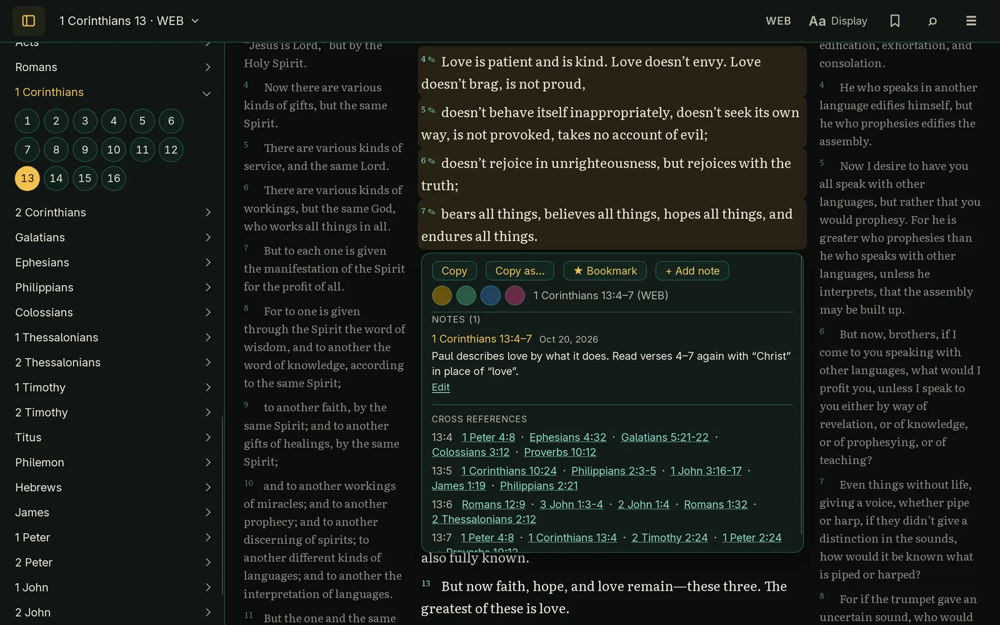

Read Scripture without the noise.
A free Bible reader for Windows and Linux. The KJV, BSB and WEB are built in, so it works offline, with no account.
Version 2.23.0, for 64-bit computers. The Windows installer isn’t code-signed yet, so Windows will probably warn you before it runs. What to expect.
Gospel Getter is a desktop app for Windows and Linux computers. There’s no phone, tablet or Mac version. To install it, open this page on your computer.

- Free No price, no ads, no subscription.
- Reads offline All three translations are built in.
- No account Nothing to sign up for or log in to.
- Open source MIT-licensed code on GitHub.
A quiet place to read
Gospel Getter does a few things and stays out of the way. Every screenshot on this page is the real app.
Read in context
The chapter you’re reading sits in the middle, with the chapters before and after it faded on either side, as in the picture above. Press ← and → to turn chapters across the whole Bible.
Close the app and it reopens at the verse you were reading.
Find a passage quickly
Type a reference to go straight there:
John 3:161 Cor 13Psalm 23
Type anything else to search every word of the text, with the words highlighted. Put words in quotes, like "love one another", to find an exact phrase. Search works offline too.

Keep what matters
Select verses and a card opens under them. Point at a note to see its part of the card.
- Select a passage Click a verse, then Shift-click another. The range stays marked while you work with it.
- Copy with the reference The text comes with “— 1 Corinthians 13:4–7 (WEB)” after it. Copy as… adds verse numbers or makes a Markdown quote.
- Follow the cross-references Related passages for every verse, from OpenBible.info. Click one to read it right there.


- Bookmark and highlight Star a passage, or highlight it in yellow, green, blue or pink. The Library lists them all.
- Write notes Notes stay with their verses and take a little Markdown. Export them as a file, or print them as a commentary.

Compare any two translations
Press C to read your translation beside another, one row per verse. Where only one of them numbers a verse, the other column says so instead of shifting anything. Compare with Notes to see your own notes on the chapter beside the text instead.
Every text is stored exactly as its public-domain source provides it. In the KJV, the words its translators supplied are in italics, as in printed KJVs, and its margin notes are footnotes.
Make it yours
Try the app’s themes, text sizes and layouts on Psalm 23. The colours and the typeface, Literata, are the app’s own.
Psalms 23
1 Yahweh is my shepherd: I shall lack nothing.
2 He makes me lie down in green pastures. He leads me beside still waters.
3 He restores my soul. He guides me in the paths of righteousness for his name’s sake.
4 Even though I walk through the valley of the shadow of death, I will fear no evil, for you are with me. Your rod and your staff, they comfort me.
5 You prepare a table before me in the presence of my enemies. You anoint my head with oil. My cup runs over.
6 Surely goodness and loving kindness shall follow me all the days of my life, and I will dwell in Yahweh’s house forever.
And under Aa in the app
- Three line spacings and three widths.
- Reading mode, which hides everything but the text.
- A ninth theme, System, which follows your computer: Vellum when it’s light, Chi Rho when it’s dark.
- Printing is always black on white.
Made for your computer
Gospel Getter is a desktop app, not a website. Once it’s installed, you don’t need the internet to read.
- Windows and Linux. Installers for 64-bit Windows, and an AppImage or
.debfor Linux. - Works offline. The King James Version, the Berean Standard Bible and the World English Bible are built in, along with the cross-references and search.
- Your reading stays on your computer. Bookmarks, highlights, notes and settings live in the app’s own data folder. The app only goes online to check for a new version, which you can turn off, and to download one you’ve chosen to install.
- Updates ask first. Nothing is downloaded or installed until you choose Update and restart.
- Move to a new computer. Export your bookmarks, highlights, notes and settings to a file, and see what it contains before you import it.
- Free and open source. The code is on GitHub under the MIT license.
Download Gospel Getter
Version 2.23.0. Free, for 64-bit Windows and Linux. What’s new
Windows 10 or 11, 64-bit. Linux: 64-bit, Ubuntu 22.04 / Debian 12 or newer (or similar).
You seem to be on a phone or tablet. Gospel Getter runs on Windows and Linux computers only, so open this page on your computer to install it.
Windows
-
Windows installer (.exe)
Recommended for most people.
-
Windows MSI package
For people who prefer or manage MSI installs.
The installers aren’t code-signed yet, so Windows SmartScreen will probably say it “protected your PC” from an “unknown publisher”. If you trust this download, choose More info, then Run anyway. More about this.
Linux
-
AppImage
Works on most distributions. Nothing to install: make it executable and run it.
-
.deb package
For Debian, Ubuntu and distributions based on them.
Support Gospel Getter
Gospel Getter is free and always will be. If it helps you, you can leave a tip. It’s entirely optional and changes nothing in the app.
Payments are handled by Stripe. Tipped by mistake? Write to help@chirhocode.com and we’ll refund it.
Leave a tip
You choose the amount, from $1 to $500.
Leave a one-time tipSupport monthly
Common questions
Why does Windows warn about an “unknown publisher”?
Windows shows that warning for programs that aren’t code-signed, and Gospel Getter’s installers aren’t signed yet. The warning is about that missing signature; it doesn’t mean Windows found a problem in the file.
If you downloaded the installer from this page or from the GitHub releases page, choose More info, then Run anyway. If you’d like to check the file first, compare its checksum (next question). If you’d rather not run unsigned software, that’s a reasonable choice, and you can wait for a signed release.
How do I check my download?
SHA256SUMS lists the SHA-256 checksum of each download. The installers are built by GitHub Actions from the tagged source, as the release notes explain.
On Linux, put SHA256SUMS in the same folder as your download and run:
sha256sum -c --ignore-missing SHA256SUMSOn Windows, in PowerShell, run this and compare the result with the matching line in SHA256SUMS:
Get-FileHash .\Gospel-Getter_x64-setup.exeAppImage or .deb?
The AppImage runs on most distributions without installing anything. Make it executable (in your file manager’s properties, or with chmod +x), then open it.
The .deb installs Gospel Getter like any other package on Debian, Ubuntu and their relatives, for example with sudo apt install ./Gospel-Getter_amd64.deb.
Does it update itself? Will I lose my bookmarks?
It can, and it always asks first. When Gospel Getter starts, it checks whether there’s a new version.
If there is, it tells you, and nothing is downloaded or installed until you choose Update and restart. You can choose Later instead, or turn the check off in About Gospel Getter, from the menu at the top right of the app.
Check now, in the same place, checks straight away, and shows a new version right there, with its release notes and Update now.
The Windows installers (setup.exe or MSI), the AppImage and the .deb from this page update themselves. If you built Gospel Getter yourself or installed it another way, the app offers a link to the download page instead.
Versions 2.6 and newer update themselves. Versions 2.5 and older can’t update themselves. If you have one of those, download the new version from this page and install it over the old one, just this once.
Checking downloads a small file from GitHub that names the latest version, so GitHub sees your IP address, as with any download. Nothing about your reading or your data is sent.
Updating keeps your bookmarks, highlights, notes, reading position and settings. To be safe, or to move to another computer, use Export data… in the same menu first. A file always imports into the same version or newer. An older version may skip a setting it doesn’t know, or refuse a file from a much newer version, and it tells you which.
Which version is this?
The download buttons on this page always get the newest release. To see which version you have installed, open the menu at the top right of the app and choose About Gospel Getter: the version is shown under the name. Older versions are on the releases page.
Which translations are included?
Three: the King James Version (KJV), the Berean Standard Bible (BSB) and the World English Bible (WEB). All three are public domain, which is what lets them ship offline inside the app; the KJV is the default, and the translation button at the top of the app switches between them. About Gospel Getter, in the menu at the top right, credits each one’s source. Copyrighted translations such as the NIV and ESV aren’t included.
Cross-references are from OpenBible.info, licensed under CC BY 4.0.
Is there a Mac, phone or web version?
No. Gospel Getter is available for Windows and Linux computers only.
On Windows, the app uses Microsoft’s WebView2, and if your computer doesn’t have it yet, the installer downloads it, so it needs the internet that once.

About the maker
Gospel Getter is made by Chi Rho Code LLC, a small Christian software company. Software made well, for the glory of God.
The app is free, and its source code is open on GitHub under the MIT license. It keeps every translation exactly as its public-domain source provides it: we never edit the text.
Found a problem, or have a question or an idea? Open an issue on GitHub (you’ll need a free GitHub account), or write to help@chirhocode.com.